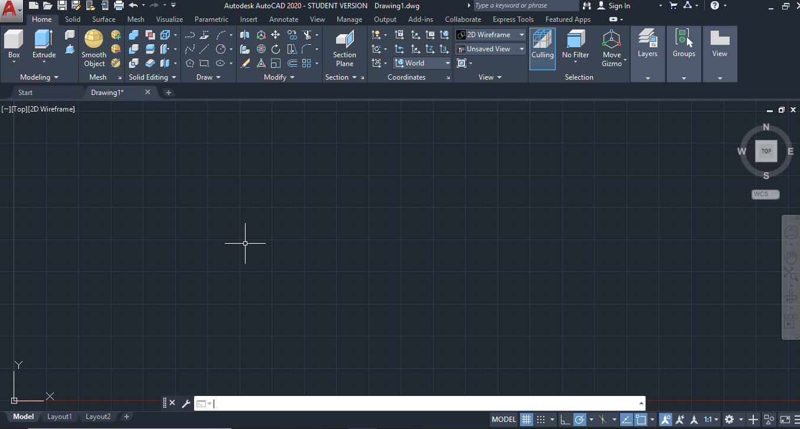
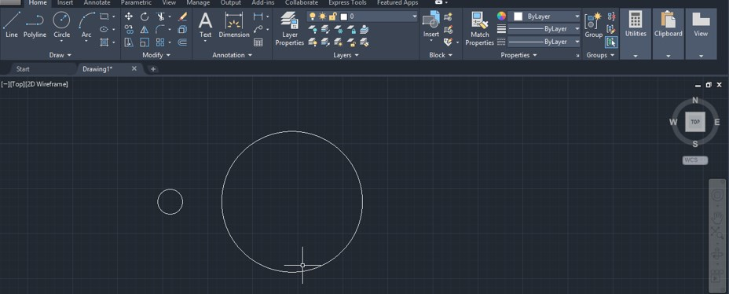
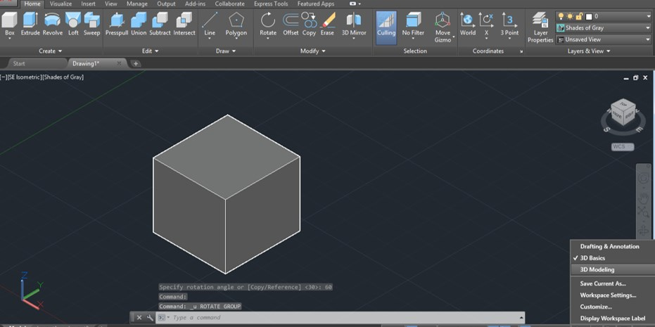
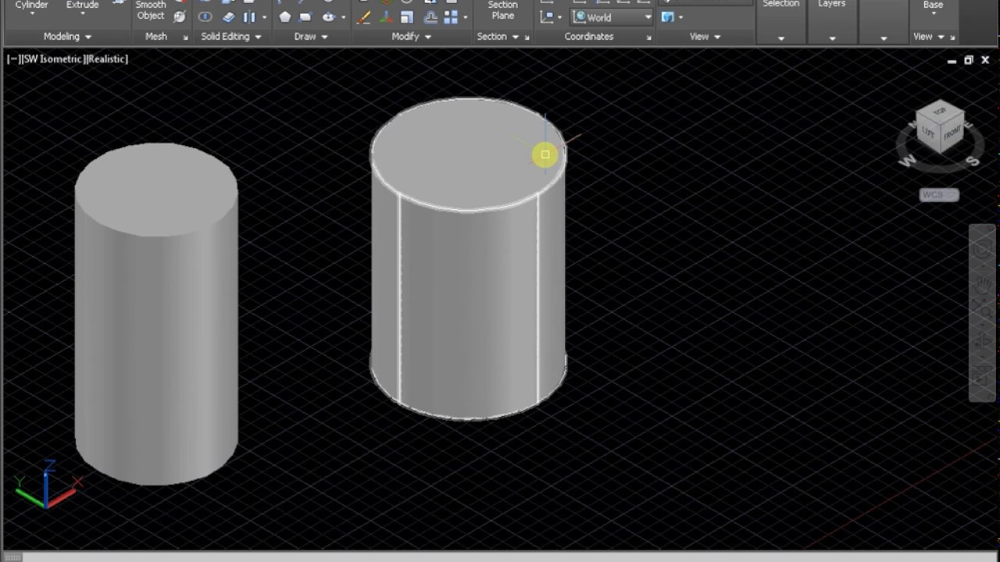
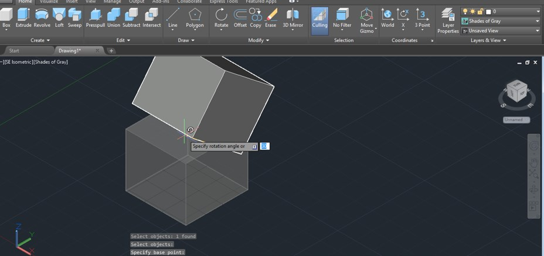

Introduction to AutoCAD
AutoCAD stands for Autodesk Computer-Aided Design. It is a drafting and design software application developed and marketed by Autodesk. The AutoCAD software is used in industries, by architects, designers, graphic designers, city planners, managers, and other professionals worldwide.
The commercial CAD programs were used before the development of AutoCAD. The AutoCAD was run on microcomputers with an internal graphics controller. The commercial CAD programs ran on the minicomputers or mainframe computers, where each CAD operator worked at a separate graphics terminal.
Setting Up the Workspace
First, let’s bring out all the 3D modeling tools we’ll need to complete this tutorial.
- Looking at the Quick Access Toolbar, click on the downward extend arrow to customize this toolbar. A dropdown menu will pop up; click on “Workspace” to enable this feature
- Now the Quick Access Toolbar will display a new button. By default, it’s “Drafting & Annotation”, but let’s change it to “3D Modeling” by clicking on it and selecting this choice from the dropdown menu. This will allow us to use all 2D and 3D tools required for our tutorial.
- Lastly, to change units, click on the AutoCAD logo in the top-left corner. This will open the AutoCAD menu. Go to “Drawing Utilities > Units”. In this tutorial, we’ll use the metric system, so change the “Insertion Scale” to millimeters
Now we should be all set to start designing!
Drawing Shapes
Naturally, AutoCAD offers easier ways to draw simple shapes. Let’s draw a few shapes to create a new form. Stay with us, we promise we’re going somewhere.
- Click the “Rectangle” icon on the ribbon or type it in on the command bar. Now, enter the rectangle origin as (0,0), just like we did for the line, and hit Enter.
- Click the “Rectangle” icon on the ribbon or type it in on the command bar. Now, enter the rectangle origin as (0,0), just like we did for the line, and hit Enter.
- Next, let’s make a circle with its center at (0,50). Confirm the coordinates by pressing Enter. Then, set the radius to 8 mm.
If you made a mistake, simply double-click on the sketch you want to edit. Edit the values in the pop-up window.

- Next, create an ellipse centered at (0,30). Set the major radius (parallel to the X-axis) to 70 mm and the minor radius to 30 mm, like the image below.
Creating Basic Shapes
3D modeling might be one of the most interesting parts of this tutorial. Going 3D will allow you to design your own models for 3D printing.
Let’s start with some direct modeling tools. This is when we use predefined shapes like spheres and cubes to create objects via Boolean operations (union, subtraction, and intersect).
- First, switch to the isometric view through the View Cube by clicking on the little house icon.
- Now let’s start by creating a perfectly round body. Type in “sphere” and center it at (0,0). Once that’s set, move your mouse around it to gain form. Alternatively, enter a value for the radius which in this case is 10 mm.
- This how you create basic three-dimensional shapes. Easy enough, right? Still, the object doesn’t really look like a solid yet. Let’s change that
Changing Visuals
If you want to change the visual effects when displaying 3D objects, you can do so by typing in “visualstyles”. A new window will open where you can choose the visual style you prefer.
Let’s change the visual style from “2D Wireframe” to “Shades of Grey”.
Now, let’s try some of the Boolean operations mentioned before. First, let’s create a cylinder that overlaps the sphere we just created.
To do that, type in “cylinder” and draw the base of the cylinder just like you would a simple circle. Choose the CenterPoint (0,0) as the origin and go for a 10 mm radius. Next, similarly to the sphere, move the mouse downwards to see it extrude. Set its height to 25 mm and confirm by pressing Enter.

- The first operation we’ll learn here is union, where objects are merged. The sphere and cylinder might look like one piece but they’re still two separate parts.
- To join them, type in “union” and select both shapes. Confirm the operation by hitting Enter, and now you should have one solid body.
- Another basic operation is subtraction. Let’s reverse the last union operation first by clicking on “Undo” at the Quick Access Toolbar.
- Now type in “subtract” and enter the command. First, we need to select the object to subtract from. Select the cylinder and confirm by pressing Enter. Then, select the sphere as the object to subtract and confirm.
Extrude
Start by creating a 2D sketch of an octagon. Type in “polygon” and press Enter. First, set the number of sides to 8, then select the CenterPoint (0,0) as the center, and click on “Circumscribed about circle”.
Enter an 80 mm radius and confirm. Now to the fun part. First, type in “extrude” and press Enter. Select the 2D octagon shape we just drew and again press Enter to create a 3D object.
If you move the mouse upwards you’ll see the polygon extrusion. Set the height to 25 mm and confirm it with the Enter key. The extrusion operation can be made with any sketch as long as it’s a closed shape
3D Move
Now, let’s move out from the origin. Type in “3D move” and confirm the command. The first thing to do is to select the parts to move. In our case, select the cylinder and press Enter.
Next, we need to select a base point for the move. With your mouse, select the center point of the cylinder’s base. Hit Enter to confirm.

Once we’ve confirmed what we want to move, there are various ways to move the cylinder around: with the mouse through the XY plane or by entering a distance and direction for the move through polar coordinates.
We can also perform linear translations through the XZY axes. Note the three-axis arrow shape at the center of the cylinder. Click on the blue one (Z) to move it vertically with the mouse or by entering the distance.
This last move operation can be done by simply selecting the object. You’ll note that the arrow axis will be displayed.